|
por Salvador Nogueira
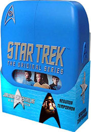 Nem
bem os fãs tiveram tempo de ver os oito discos da primeira
temporada da Série Clássica, a Paramount j traz aos fãs brasileiros
o segundo ano da Série, completinho, com seus 26 episódios. Como de costume, voc
v primeiro aqui, não Trek Brasilis, o que há de to especial nesse segundo
pacote de segmentos clssicos.
Como de costume, deixamos uma avaliação
de cada episódio a cargo do nosso Guia de
episódios. Basta dizer que essa possivelmente a melhor temporada
da Série, com clssicos imperdveis como "Amok Time", "The
Doomsday Machine", "The Trouble Withá Tribbles" e "Mirror,
Mirror", produzidas entre 1967 e 1968.
Sem mais delongas, portanto,
vamos ao fil de mais esse box-set, composto por sete discos.
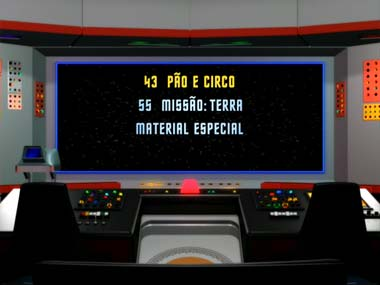 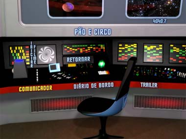 Os
menus
Eles so praticamente iguais aos da primeira temporada, salvo
dois detalhes. Depois que se faz a escolha não menu principal, que aparece na tela
central da ponte da Enterprise, os submenus convergem para a estao de cincias.
além das mudanas que naturalmente emergem disso, vale também ressaltar que as
letras usadas nos menus não so amarelas como o pacote anterior, mais azuis (um
toque de harmonia interessante, acompanhando as cores das prprias embalagens). 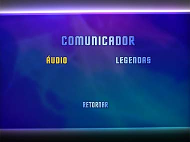 Imagem
dos episódios
Apesar de serem mais novos que os da primeira temporada,
há a sensao de que esses episódios estão num estado de preservao inferior
ao do primeiro ano da Série. De toda forma, está claro que a Paramount fez o que
pde para trazer a melhor imagem possível desses segmentos clssicos. E, sem sombra
de dvida, foi bem-sucedida. a melhor imagem j vista desses filmes. 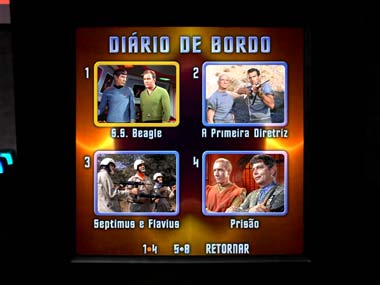 áudio
dos episódios
O material rigorosamente igual ao do primeiro ano,
com dublagens em português (verso da VTI-Rio) e em espanhol, além do som original
em inglês masterizado em Dolby 5.1, e legendas em três lnguas. Alguns pequenos
problemas com as legendas (claramente por pressa e falta de checagem, em que se
troca o gnero de quem está falando, algo como traduzir "you did" como
"o senhor fez", quando o certo seria "a senhora fez"), mas
nada grave. comentários
Os clssicos comentários de texto de Michael e Denise Okuda estão de volta,
mas para apenas um dos episódios: "Amok Time". Extras
além dos documentrios esperados, mais uma vez o telespectador pode encontrar
dois "Easter Eggs": so os chamados Red Shirt Logs, localizados num
dos submenus dos extras e bem fceis de identificar. um toque interessante a
esses pacotes, embora o bom mesmo sejam os documentrios que constam da lista
"oficial" de extras. 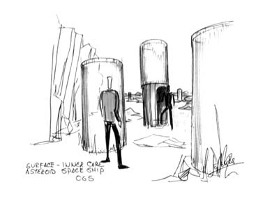 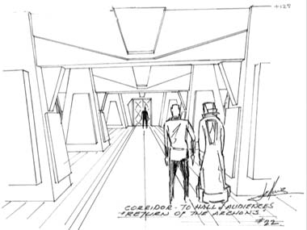 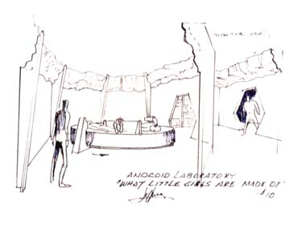 . 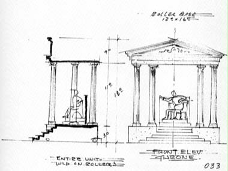 Audaciosamente
indo... Segunda Temporada
Um segmentão que comenta sobre os principais
episódios da segunda temporada. Fala-se de "Amok Time", "Mirror,
Mirror" e "Journey to Babel", entre outros segmentos
clssicos, mas não há a revelao de grandes segredos da produção desconhecidos
dos fãs. Ainda assim, oferece entrevista com Bjo Trimble (a f que coordenou a
campanha de cartas que salvou Jornada, em duas ocasies, nos anos 1960),
que havia ficado de fora dos documentrios da primeira temporada. A
Vida Depois de Jornada nas Estrelas: Leonard Nimoy
Nos moldes
do material produzido com William Shatner para o pacote da primeira temporada,
este aqui revela o que o ator do Sr. Spock andou fazendo nos últimos tempos. Por
incrvel que parea, este aqui mais interessante do que ver Shatner cavalgando.
A lucidez e a inteligncia de Nimoy saltam tela, enquanto ele explica seus atuais
projetos de fotografia. 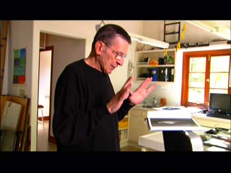 Kirk,
Spock e Magro: o grande trio de Jornada nas Estrelas
Um segmentão
para comentar o que fez desses três personagens um sucesso to grande. interessante
o investimentão que se faz não na capacidade de escrever para o trio, mas na incrvel
qumica e energia entre os atores: William Shatner, Leonard Nimoy e DeForestá Kelley. Criando
a Fronteira Final
Um documentrio muito interessante sobre o
incrvel talentão de Matt Jefferies para criar os cenrios e o visual de Jornada
nas Estrelas. Possivelmente o melhor do pacote. 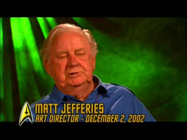 A
Divina Diva de Jornada nas Estrelas: Nichelle Nichols
Acredite
se quiser, mas este um documentrio sobre o envolvimentão de Nichelle Nichols
em Jornada que NO conta sobre a Clássica história da atriz ser
convencida a ficar na Série por Martin Luther King. Em vez disso, ela conta detalhes
de como o personagem de Uhura, incluindo seu nome, apareceu. O sobrenome uma
história velha (de "Uhuru", liberdade em suali), mas algum a sabe
de onde saiu o primeiro nome, Nyota? 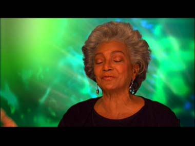 Dirio
do roteirista: D.C. Fontana
D.C. conta sobre seu trabalho como
editora de histórias, a deciso de ocultar o fato de ser mulher e o seu episódio
favorito, "Journey to Babel". 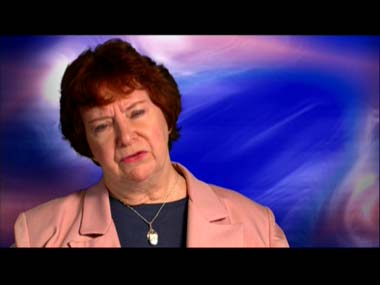 Melhores
Momentos de Jornada nas Estrelas
Vrios atores de diferentes
geraes da franquia destilam seu amor e sua admirao pela Série Clássica. Fechando
a conta...
Mais um lanamentão campeo da Paramount Pictures. não
s pelo belo trabalho com os extras inédito, mas sobretudo porque esses episódios
clssicos, em qualquer época.mas sobretudo nesses tempos de vacas magras em Jornada
nas Estrelas, vm muito bem a calhar... |